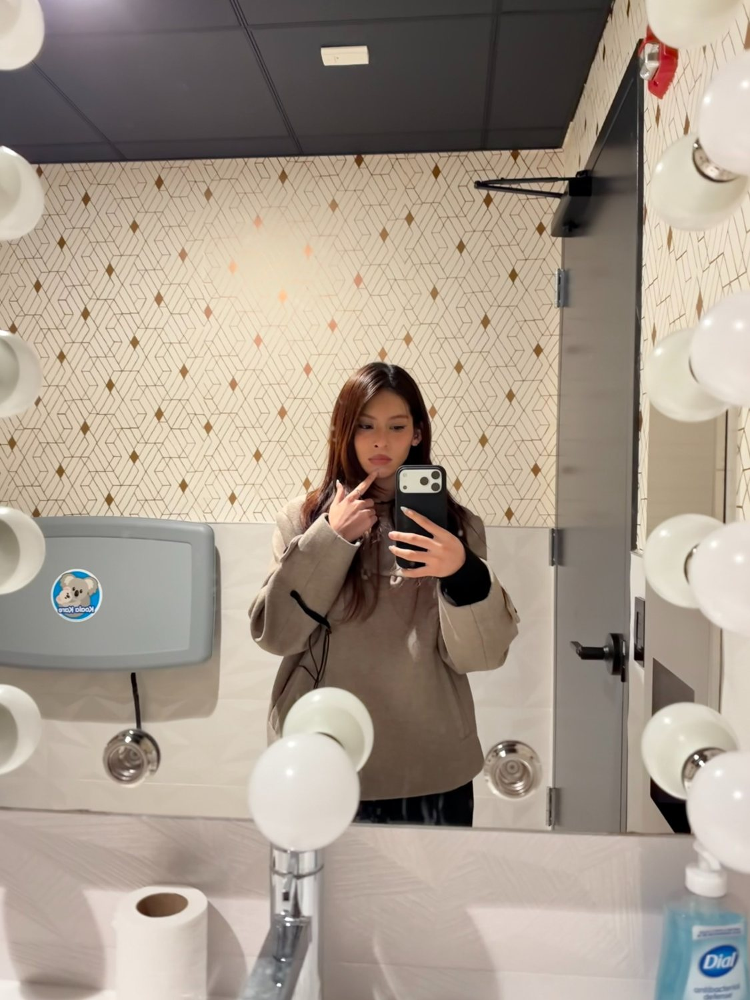

The Other Me
Something strange happens in my room.
One night I was looking in the mirror and thinking about all the things I wish I could change about myself. Then my reflection smiled, even though I did not. She asked me, "What if you could be a better version of yourself?" I did not know what to say.